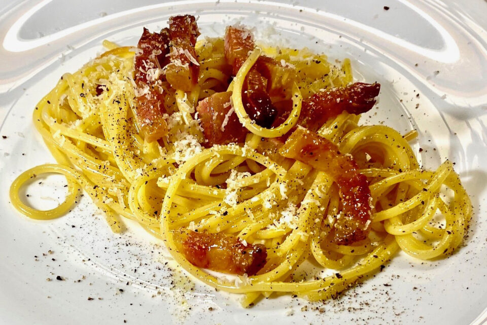

Ricette italiane
Le migliori ricette della penisola
Spaghetti alla carbonara

Ingredienti
- 320 g Spaghetti
- 6 Tuorli (uova medie)
- q.b. Pepe nero
- 150 g Guanciale
- 50 g Pecorino romano DOP
Preparazione
- Per preparare gli spaghetti alla carbonara cominciate mettendo sul fuoco una pentola con l’acqua salata per cuocere la pasta. Nel frattempo eliminate la cotenna dal guanciale e tagliatelo prima a fette
- Versate i pezzetti di guanciale in una padella antiaderente e rosolate per circa 10 minuti a fiamma medio alta.
- Tuffate gli spaghetti nell’acqua bollente e cuoceteli al dente. Intanto versate i tuorli in una ciotola.
- Aggiungete il Pecorino e insaporite con il pepe nero. Amalgamate il tutto con una frusta a mano, sino ad ottenere una crema liscia.
- Intanto il guanciale sarà giunto a cottura; spegnete il fuoco e utilizzando un mestolo prelevatelo dalla padella, lasciando il fondo di cottura all'interno della padella stessa. Trasferite il guanciale in una ciotolina e tenetelo da parte.
- Versate una mestolata d’acqua della pasta in padella, insieme al grasso del guanciale.
- Scolate la pasta al dente direttamente nel tegame con il fondo di cottura. Saltatela brevemente per insaporirla. Togliete dal fuoco e versate il composto di uova e Pecorino nel tegame. Mescolate velocemente per amalgamare.
- Aggiungete il guanciale, mescolate un'ultima volta e servite subito gli spaghetti alla carbonara aggiungendo ancora del pecorino in superficie e un pizzico di pepe nero.